Volver al inicio
Ejercicio previo
Próximo ejercicio
Volver al inicio
Ejercicio previo
Próximo ejercicio
Ejercicio 4 de 6
Purificando una proteína - un proceso secuencial
Hasta ahora, usted sea dado cuenta que no puede purificar la proteína número 2 en un solo paso utilizando sólo filtración por gel o cromatografía de intercambio iónico. (Esta mezcla ha sido especialmente diseñada para contener dos proteínas con el mismo peso molecular y dos con el mismo punto isoeléctrico). De todas maneras, utilizando las dos técnicas secuencialmente, debería ser posible purificar la proteína 2. Este uso secuencial de las técnicas que utilizan las diferentes propiedades de las proteínas es un aspecto clave de las estrategias de purificación de proteínas.
A continuación se describe una manera para purificar la proteína número 2.
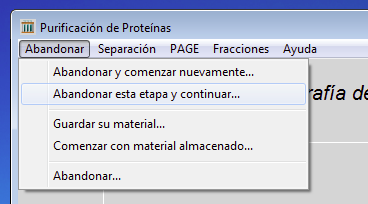
Si ya no lo ha hecho, seleccione el menú abandonar y luego seleccione Abandonar esta etapa y continuar...
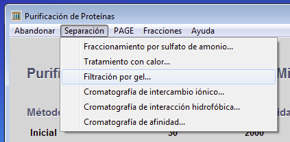
Haga click en el menú Separación y seleccione Filtración por gel....
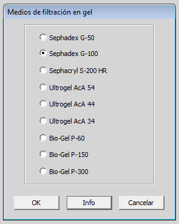
Seleccione Sephadex G-100 y luego haga click en OK.
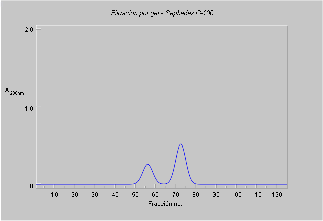
Usted obtendrá el mismo patrón de elución que la última vez que utilizó Sephadex G-100. La última vez, usted identificó que proteínas estaban contenidas en cada peak, utilizando electroforesis bi-dimensional. Esto es de una forma, poco realista, ya que los geles bi-dimensionales son experimentos que consumen tiempo y son técnicamente complicados. Usted no los utilizaría como un sistema rutinario para monitorear fracciones. La proteína 2 es una enzima, por lo que se puede saber que fracción la contiene realizando un ensayo enzimático en cada fracción.
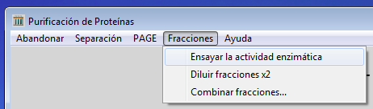
Ahora se encuentra disponible el menú Fracciones, utilice Ensayar la actividad enzimática.
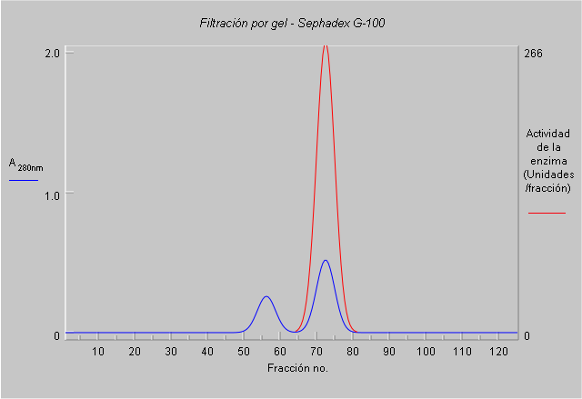
La actividad enzimática (en rojo) se encuentra totalmente en el segundo peak, no hay actividad en el primer peak. Usted necesita colectar y conservar las fracciones que contienen la actividad enzimática y desechar el resto.
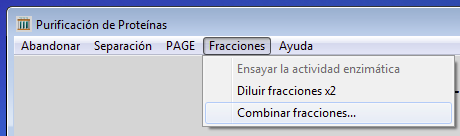
Haga click en el menú Fracciones y seleccione Combinar fracciones...
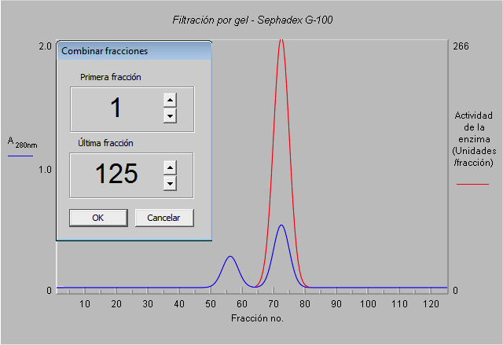
En este punto, se necesita indicar que fracciones necesitan ser combinadas. Solamente necesitamos el segundo peak.
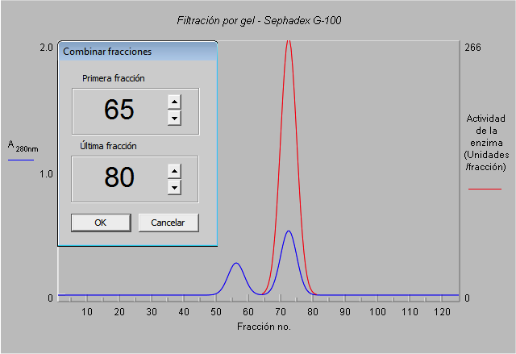
Ajuste la primera fracción a 65 y la última a 80. Click en el botón verificar. La extensión de las muestras colectadas se muestra en plomo. Usted puede cambiar el número de fracciones a colectar si lo desea y puede hacer click nuevamente en verificar. Cuando la selección haya sido finalizada, haga click en OK.
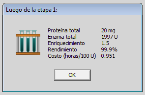
Este es el final del primer paso en la estrategia de purificación. el programa entrega información para hacerle saber cómo va su purificación.
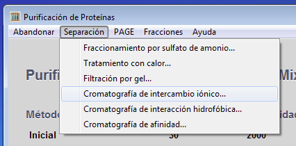
Usted ya ha establecido que no es necesario ensayar con otra resina de filtración por gel, por lo que puede hacer click en el menú Separación y seleccionar Cromatografía de intercambio iónico... No utilice el menú Abandonar, ya que usted quiere seguir utilizando el material colectado desde el último paso.
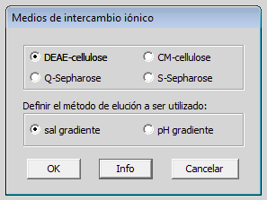
Haga click en DEAE-cellulose y Gradiente de sal, luego haga click en el botón OK.
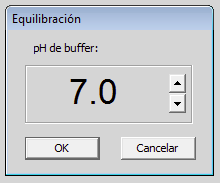
Como anteriormente, fije el valor en 7.0 y luego haga click en OK.
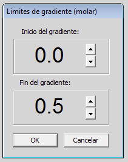
Como anteriormente, seleccione el inicio del gradiente en 0.0 y el fin del gradiente en 0.5 molar.Ahora haga click en el botón OK.
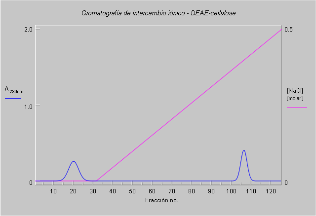
Este es el perfil de elución que usted debería obtener. ¿Se ve diferente al perfil obtenido cuando se utilizó la mezcla completa? ¿Que peak contiene la proteína 2? Ensaye la actividad enzimática para saberlo.

Colecte las fracciones que poseen actividad enzimática. La proteína 3 debería haber sido removida en el paso de filtración por gel, dejando las proteínas 1 y 2 para ser separadas por cromatografía de intercambio iónico. Por lo que su material debería estar puro. Ahora vale la pena examinarlo por electroforesis 1D y 2D para verificar su pureza.
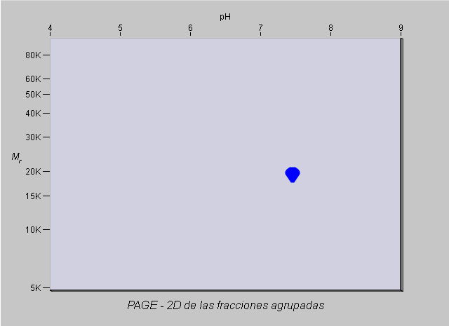
Ok, esta puro. Ahora es su turno. Haga click en el menú Abandonar, Abandonar y comenzar nuevamente....
Cargue nuevamente la mezcla Easy3_mixture y verifique si puede purificar la proteína 2 utilizando un método que involucre cromatografía de intercambio iónico seguida de una filtración por gel, lo reverso de lo que usted acaba de hacer.Cuando haya terminado eso, estará listo para tratar de purificar proteínas desde una mezcla más compleja.